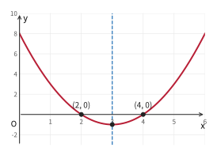

ホーム ＞ 数学I ＞ 2次方程式
2次方程式 \(x^2-6x+k=0\) の2つの解の比が \(2:1\) であるとき、定数 \(k\) の値を求めよ。
解を \(\alpha=m\beta,\ \beta\) とおいて、解と係数の関係（和）から \(\beta\) を求め、積から定数を決める。最後に実数解かを確認。
解の比が \(2:1\) なので、解を \(\alpha=2\beta\)、\(\beta\) とおく。
2つの解は \(x\) 軸との交点。比が \(2:1\) になる位置を図で確かめる。

\(\alpha+\beta=6\)、\(\alpha\beta=k\)。
確認：解は \(4,\ 2\)（実数）。
【答案（テストに書く形）】
答